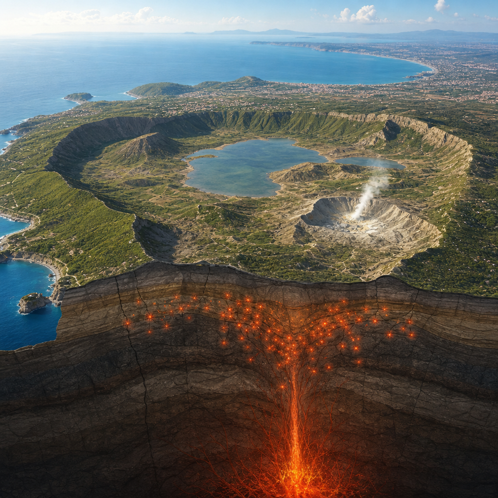
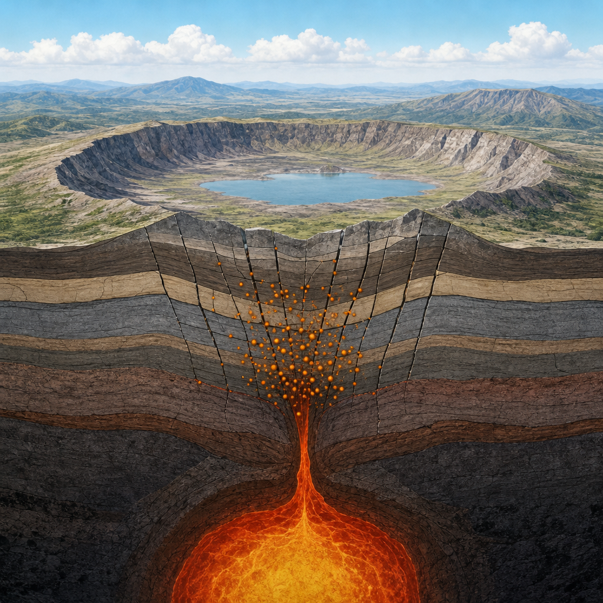

L’analisi con algoritmi di intelligenza artificiale ricostruisce la sequenza sismica nella parte centrale della caldera.
Dalle 19:46 del 31 luglio 2026 la caldera dei Campi Flegrei è stata interessata da un intenso sciame sismico, cioè una sequenza ravvicinata di terremoti concentrati nella stessa area. La sequenza è proseguita per poco meno di due giorni. Nella sala di monitoraggio dell’INGV–Osservatorio Vesuviano, il personale in turno ha identificato preliminarmente oltre 400 terremoti.
Lo sciame è iniziato con un terremoto di magnitudo durata Md 4.7 e magnitudo momento Mw 4.4. La magnitudo è una misura della dimensione di un terremoto, calcolata con metodi diversi a seconda della scala usata. L’evento è stato il più energetico registrato ai Campi Flegrei dall’inizio della rete di monitoraggio sismico, negli anni Settanta. Il suo ipocentro, cioè il punto in profondità dove ha origine il terremoto, è stato localizzato sotto il cratere della Solfatara, a circa 2,4 chilometri di profondità.
Con questo terremoto, gli eventi con Md maggiore o uguale a 4 registrati nell’area dei Campi Flegrei dall’inizio della crisi attuale, iniziata nel 2005, sono saliti a 11. Questi terremoti si concentrano nella fase più recente della crisi bradisismica e indicano un incremento dell’energia sismica rilasciata negli ultimi tre anni.
I Campi Flegrei sono noti per il bradisismo, il lento movimento del suolo che alterna fasi di abbassamento e sollevamento. Nell’area, le fasi di sollevamento sono generalmente accompagnate da un aumento della sismicità, concentrata soprattutto all’interno della caldera. Dal 1950, attraverso l’alternanza di periodi di sollevamento e abbassamento, la parte centrale dei Campi Flegrei ha raggiunto un innalzamento del suolo superiore a quattro metri.
La caldera è un’ampia depressione del terreno legata a grandi eruzioni e a successivi collassi della superficie. La sua struttura attuale è stata segnata da almeno due importanti collassi calderici: quello associato all’Ignimbrite Campana, circa 40.000 anni fa, e quello del Tufo Giallo Napoletano, circa 15.000 anni fa. L’emissione di grandi quantità di magma può infatti portare al collasso e all’abbassamento di ampie porzioni della superficie. Nella depressione calderica, dal diametro di circa 15 chilometri, numerose eruzioni successive hanno modellato la topografia osservabile oggi.

Gli algoritmi di intelligenza artificiale hanno permesso di riesaminare tutte le forme d’onda registrate dalla rete sismica dell’INGV–Osservatorio Vesuviano e dalla rete accelerometrica nazionale RAN. Le forme d’onda sono le registrazioni delle vibrazioni del suolo prodotte dai terremoti. Questo riesame consente di individuare anche eventi molto piccoli, difficili da riconoscere con la sola ispezione visiva delle tracce.
Gli algoritmi sono stati addestrati usando il catalogo sismico compilato quotidianamente dagli operatori del Laboratorio Sismico dell’INGV–Osservatorio Vesuviano. Sviluppati in collaborazione con l’Università di Stanford e l’Università Federico II di Napoli, hanno già riconosciuto e localizzato oltre 50.000 terremoti registrati nella caldera fra il 2022 e il 2025.
Per lo sciame fra il 31 luglio e il 2 agosto, il sistema ha identificato e localizzato oltre 1.000 terremoti, rispetto ai circa 450 rilevati e analizzati in via preliminare. Lo strumento è in sperimentazione nella sala di monitoraggio dell’INGV–Osservatorio Vesuviano. L’obiettivo è verificarne l’efficacia come supporto per analizzare la sismicità in tempo reale o quasi reale, compresi gli eventi di magnitudo molto bassa, e collegare più rapidamente queste informazioni agli altri parametri osservati.
La ricostruzione mostra che lo sciame ha attivato gran parte del settore centrale della caldera, coinvolgendo strutture già interessate dalla sismicità degli ultimi anni. Le principali strutture del settore sommerso della caldera sono invece rimaste escluse dalla sequenza.
Dopo il terremoto iniziale sotto la Solfatara, la sismicità si è spostata verso sud-ovest ed è diventata mediamente più superficiale: gli ipocentri si sono concentrati soprattutto fra uno e due chilometri di profondità. A ovest del porto di Pozzuoli è avvenuto un terremoto Md 3.8, il secondo più energetico dello sciame. Nella parte finale, gli eventi hanno interessato in generale l’area del duomo lavico di Monte Olibano, a profondità inferiori a un chilometro.
Tutti i terremoti analizzati si trovano nei primi tre chilometri della crosta. Questa superficialità aiuta a spiegare perché lo scuotimento possa essere intenso nell’area epicentrale, cioè nella zona in superficie più vicina al terremoto, e attenuarsi rapidamente con l’aumentare della distanza. È un comportamento tipico della sismicità in molte aree vulcaniche: eventi di magnitudo moderata ma molto poco profondi possono produrre accelerazioni e scuotimenti rilevanti nelle zone immediatamente sovrastanti l’ipocentro.
L’analisi delle forme d’onda ha consentito di determinare i meccanismi focali dei due eventi più energetici. Il meccanismo focale descrive in modo semplificato il tipo di movimento avvenuto lungo la faglia che ha generato un terremoto. Per l’evento Md 4.7, le diverse soluzioni calcolate indicano un meccanismo prevalentemente estensionale, con un piano di faglia generalmente orientato nord-est–sud-ovest, molto inclinato rispetto all’orizzontale e con una componente di spostamento laterale.
Anche il terremoto Md 3.8 ha mostrato un meccanismo simile, ma con un piano di faglia approssimativamente ortogonale rispetto a quello dell’evento Md 4.7. La soluzione è simile a quella ottenuta per il terremoto Md 4.4 registrato nella stessa area il 13 maggio 2025 e suggerisce la riattivazione di strutture già coinvolte nella sismicità recente della caldera.
Lo sciame del 31 luglio–2 agosto ha offerto una fotografia ad alta risoluzione della sismicità dei Campi Flegrei. L’intelligenza artificiale ha riconosciuto oltre 1.000 terremoti nella parte centrale della caldera, su strutture già attive durante l’attuale fase di attività. La loro distribuzione nello spazio e nel tempo aiuta a seguire l’attivazione delle strutture più superficiali del sistema.
Questo articolo l'hai letto sul blog di Meteo Radar: un'app che ti mostra da dove vengono i numeri, invece di limitarsi a dartelo. E ogni mattina ne trovi uno nuovo come questo.